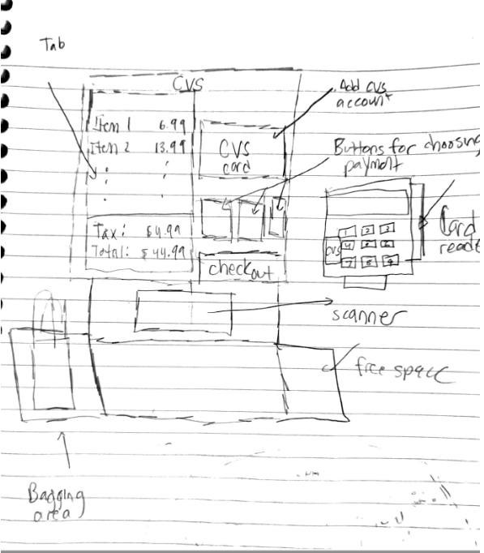

Personas And Storyboarding
Storyboarding: The CVS Self Checkout Scanner
Part 1: Introduction
I have chosen to analyze the interface the CVS Self-Checkout Kiosk. To do this, I will take a trip to the CVS Store and make a few observations on how people use the interface and speak to a few customers about their experience. After doing this, I will use this information to create a mockup "Persona" of potential users of the interface and walk through the experience of using this interface through a storyboard
While choosing this interface, I created a few questions (Check Part 2 for these questions) to help inform how I understood the interface. After visiting a CVS in person and observing how the interface looked, how people shopped and speaking to a few customers, I got a better sense of the positives and limitations of the self-checkout machine
This is my recreation of what the CVS Self-Checkout Scanner looks like. The scanner is made up of a few components: A screen in which users can see the items they buy and choose to checkout/add their CVS account. Another component are the areas to perform scanning (the scanner/scanning area), bagging (the bagging area) and a free space, which I noted that users utilized for various functions. There is also a card reader to allow users to pay for their items
Part 2: Recording Observation
After observing each of the Users I noticed a few trends (and differences) among shoppers.
- Items Bought: 2 of the users who utilized the kiosk had under 6 items and were carrying each of the items in their hands (ie: They did not use a shopping cart). Only one user utilized a shopping cart, with around 10 items in her cart.
- Bagging Area: Users did not keep their items in the bagging area after scanning. Rather they moved them to the free space to the side, and opted to bag their items at the end. 2 of the 3 users utilized only 1 bag, while 1 user utilized 2 bags
- CVS CareAccount: Only 1 of the 3 users utilized their CVS account (after questioning, I realized that 2 of the 3 users had CVS Care Card accounts).
- Scanning: Scanning items generally was straightforward, 2 users required clerk assistance when scanning an item. 1 of the users needed assistance because they were purchasing cough medicine, which required them to be age-verified. Another user needed assistance because one of their items had a tag that they could not find, which made it difficult to scan the item.
- Payment: All 3 of the users utilized a credit/debit card when paying for their items. 2 of the users utilized the “insert” feature in the card reader, while 1 user utilized the “swipe” mechanism in the card reade
- Receipt: 2 of the 3 users opted to receive a receipt, while 1 user did not.
Here are some of the questions I asked users and a summary of their responses:
- Why did you choose to use self checkout over a cashier-based checkout?
- Did you encounter any issues with the checkout process? What made it difficult to troubleshoot this issue?
- Why did you choose to bag your items the way you did?
- Do you have a CVSCareCard? Did you use it for this transaction?
- What type of items did you choose to shop for today?
The respondents in general cited the ease and speed of self-checkout, as well as the fact that sometimes, there aren’t cashiers at the front counter due to short-staffing at certain hours of the day. One respondent stated that they like to see the prices of the items before they checkout to potentially remove/add items, which they feel is easier to do at self-checkout. Interestingly enough, none of the respondents cited the number of items they purchased as part of their decision to use the checkout. One respondent claimed that it felt like it was now made the “norm” to do a self-checkout and that a cashier-based checkout required social interaction, which they felt was unnecessary.
Only 1 respondent encountered issues with the self-checkout process, as they tried to scan an item but could not find the tag. The position of the scanner, they claimed, made it hard to scan the item based on where the tag was located on their item. 1 respondent required age-verification for their cough medicine, but followed the directions as given on the screen of the self-checkout scanner.
All 3 respondents said that they tried to minimize the number of bags they used mainly for ease of carrying. 2 of the 3 respondents said since they were not planning to travel in a car, they needed to hold their bags in their hands. The other respondent who was using a car still wanted to minimize the amount of bags she used and also cited a desire to be sustainable and minimize waste as another reason why she used as few bags as possible.
2 out of the 3 respondents had a CVSCareCard. Only 1 chose to use it, because they believed they had enough points to qualify for a discount. This user stated that multiple people in their family have CVS accounts which they share.
All 3 respondents said that they came to CVS for essentials. Each of the 3 respondents bought some form of cleaning supply (soap, paper towel, toilet paper), while only 2 of the 3 respondents bought drinks (milk, energy drink and lemonade). 1 of the 3 respondents bought makeup and skincare items as well. 1 of the 3 respondents also bought a candy (M&M’s)